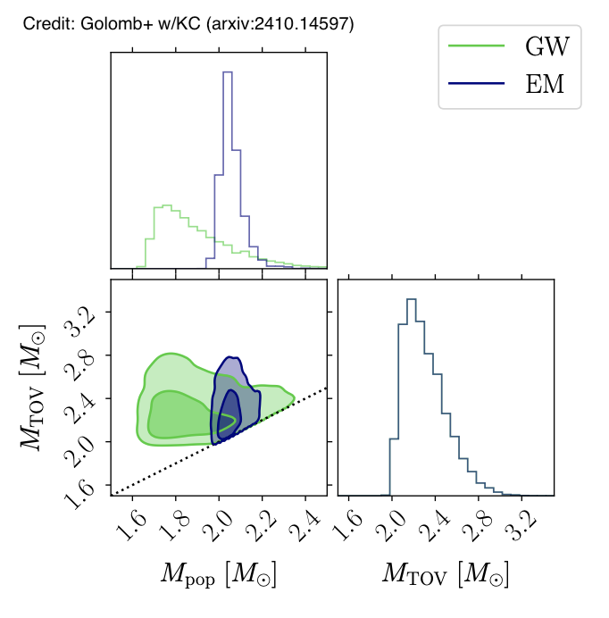

Neutron stars and dense matter

Neutron stars are the densest objects we know of in the universe. Their matter is packed so tightly that it exceeds nuclear density - the density of atomic nuclei. Because of these extreme conditions, we still do not fully understand what neutron star matter is made of or how it behaves. To study neutron star matter, we combine two approaches: microscopic studies (nuclear physics calculations and lab experiments) and macroscopic observations (measuring neutron star masses, sizes, and how they deform under gravity). Gravitational-waves provide valuable information about neutron star matter during binary mergers. As two neutron stars spiral toward each other, tidal forces cause them to deform, which affects their orbital motion and the gravitational waves they emit. After they collide, the merged object continues producing gravitational waves, though these post-merger signals have not been detected yet.

We combine data from multiple sources - gravitational waves, radio telescopes, X-ray observations, and nuclear physics experiments - to understand the properties of ultra-dense matter in beta equilibrium inside neutron stars. In a study led by former Caltech graduate student Isaac Legred, we analyzed gravitational-wave signals from two neutron star mergers (GW170817 and GW190425) along with radio and/or X-ray observations of two pulsars (J0740 and J0030). By combining all the data, we placed determine limits on how large neutron stars can be for a given mass. Roughly speaking, the gravitational-wave data tell us that neutron stars cannot be too large or have too much internal pressure, while the radio and X-ray data tell us they cannot be too small. To analyze the data, we used a flexible mathematical modeling approach called Gaussian process that does not assume a specific form for the dense-matter equation of state. This ensures our results reflect what the observations actually show, rather than being influenced by theoretical assumptions about how neutron star matter should behave.

Nature or nurture? Do the properties of neutron stars depend mainly on the nuclear physics of their ultra-dense matter ("nature") or on the astrophysical processes that occur during and after their formation ("nurture")? This question is especially important for understanding the maximum possible mass of neutron stars. Nuclear physics sets an absolute upper limit on how massive a neutron star can be before it collapses into a black hole. However, the different ways neutron stars form and evolve in space might prevent them from actually reaching this theoretical maximum mass. To investigate this, former Caltech graduate students Jacob Golomb and Isaac Legred developed a new method for analyzing neutron star observations. Our approach separately examines two things: the equation of state (which describes the properties of neutron star matter) and the mass distribution (which shows what masses neutron stars actually have in the universe). Using current observational data, we found no evidence that astrophysical processes limit neutron star masses to values below what nuclear physics allows. In other words, the neutron stars we observe could potentially reach the maximum masses predicted by nuclear theory.
Nuclear physics calculations cannot yet describe the ultra-dense matter throughout an entire neutron star, from its outer crust to its inner core. However, these calculations are still useful for understanding matter at specific density ranges. We compare astronomical observations with nuclear theory calculations for two main purposes: to learn more about neutron stars (in density regions where we trust the nuclear calculations) and to test how well these theoretical methods actually work. Two recent studies at Caltech explored different approaches. Legred used relativistic mean-field theory, which works well for describing matter at relatively low densities. Postdoctoral scholar Eliot Finch used perturbative quantum chromodynamics (QCD), which applies to extremely high densities - even higher than those found in neutron star cores. Throughout, we use a "hybrid" approach: we rely on nuclear physics calculations in density ranges where these methods are known to be accurate, and use flexible Gaussian processes to fill in the gaps where nuclear theory is less reliable. This strategy allows us to make the best use of current nuclear physics knowledge while acknowledging its limitations and avoiding overconfident predictions in poorly understood density regimes.